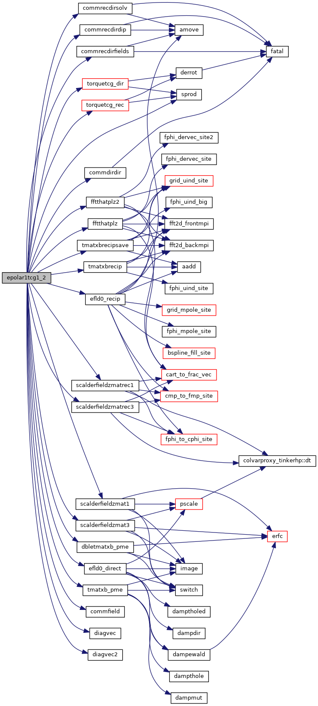
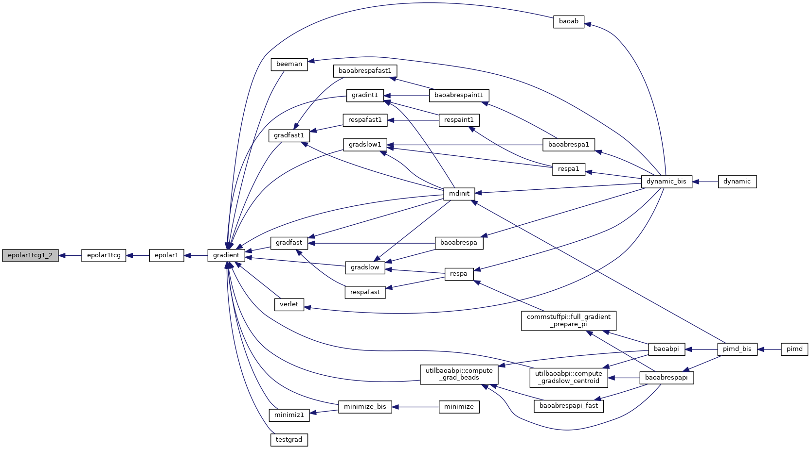

|
Tinker-HP v1.3
|
|
Tinker-HP v1.3
|
Go to the source code of this file.
Functions/Subroutines | |
| subroutine | epolar1tcg1_2 |
| calculates the induced dipole polarization gradients with the tcg1 method whith separate cores for PME More... | |
| subroutine epolar1tcg1_2 | ( | ) |
calculates the induced dipole polarization gradients with the tcg1 method whith separate cores for PME
| no | params |
Definition at line 22 of file epolar1tcg_2.f90.
References commdirdir(), commfield(), commrecdirdip(), commrecdirfields(), commrecdirsolv(), dbletmatxb_pme(), diagvec(), diagvec2(), efld0_direct(), efld0_recip(), fftthatplz(), fftthatplz2(), scalderfieldzmat1(), scalderfieldzmat3(), scalderfieldzmatrec1(), scalderfieldzmatrec3(), sprod(), tmatxb_pme(), tmatxbrecip(), tmatxbrecipsave(), torquetcg_dir(), and torquetcg_rec().
Referenced by epolar1tcg().


 1.8.5
1.8.5